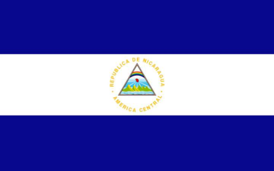
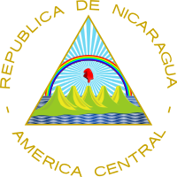

Simbolo patrios
- Sacuanjoche, flor nacional
- Guardabarranco, ave nacional
- Madroño, árbol nacional
- Bandera nacional 
- Escudo nacional 
La historia de Nicaragua recorre el período temporal desde la llegada de Cristóbal Colón incluyendo la llegada de los primeros exploradores españoles para colonización y conquista hasta la actualidad. En 1523, Gil González Dávila con licencia real para explorar y descubrir en calidad de empresa estatal de poblamiento, visitó con el contador Andrés de Cereceda, el dominio de Nicarao a orillas del Lago Cocibolca (La Mar Dulce). Avanzó más al norte, pero enfrentó el ataque de Diriangén (17 de abril de 1523), que los obligó a retirarse hacia el golfo de Nicoya. En 1526 fue nombrado gobernador de Nicaragua por el Consejo de Indias, cargo que no llegó a asumir porque falleció el 21 de abril en su natal Ávila, España.
130 370 km²